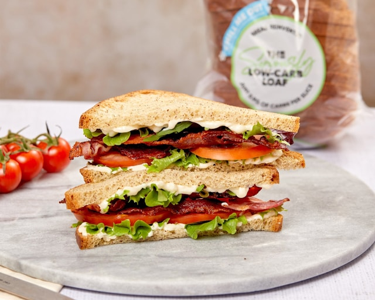

Home
The Ultimate Gourmet BLT Sandwich

Description
The BLT is an all-time American lunch classic, celebrating the simple
harmony of savory, sweet, and crisp ingredients. This upgraded version
elevates the traditional diner sandwich by using thick-cut, oven-baked
applewood smoked bacon, heirloom tomatoes, and crisp green leaf lettuce
nestled between artisanal brioche toast.
A swipe of homemade garlic-herb mayonnaise ties the elements together,
providing a creamy contrast to the crunchy bacon and juicy tomatoes. It is
a visually stunning and deeply satisfying sandwich that looks just as good
as it tastes.
Ingredients
- 8 slices thick-cut applewood smoked bacon
- 4 thick slices of brioche or sourdough bread
- 2 large ripe heirloom tomatoes, sliced thick
- 4-6 large leaves of green leaf lettuce, washed and dried
- 1/4 cup mayonnaise
- 1/2 teaspoon garlic powder
- 1 teaspoon fresh chives, finely chopped
- Sea salt and freshly cracked black pepper to taste
- 1 tablespoon butter (for toasting the bread)
Steps
-
Preheat your oven to 400°F (200°C). Lay the bacon slices flat on a
baking sheet lined with parchment paper and bake for 15 to 20 minutes
until crisp. Transfer the cooked bacon to a paper towel-lined plate to
drain.
-
While the bacon cooks, prepare the garlic-herb spread by mixing the
mayonnaise, garlic powder, and chopped chives in a small bowl. Set
aside.
-
Slice the tomatoes and season them directly with a pinch of sea salt and
black pepper to draw out their natural flavors.
-
Melt the butter in a skillet over medium heat. Place the bread slices in
the skillet and toast for 2 to 3 minutes per side until they are
beautifully golden brown and crisp.
-
Spread a generous layer of the garlic-herb mayonnaise onto one side of
each toasted bread slice.
-
Assemble the sandwiches by layering the lettuce leaves, seasoned tomato
slices, and crispy bacon between the bread slices. Cut diagonally and
serve immediately.